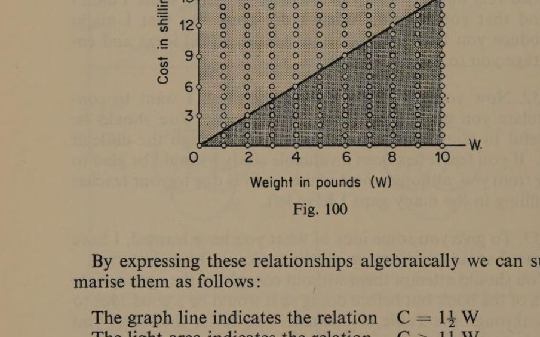
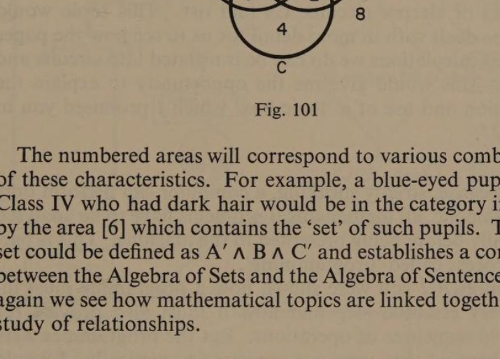
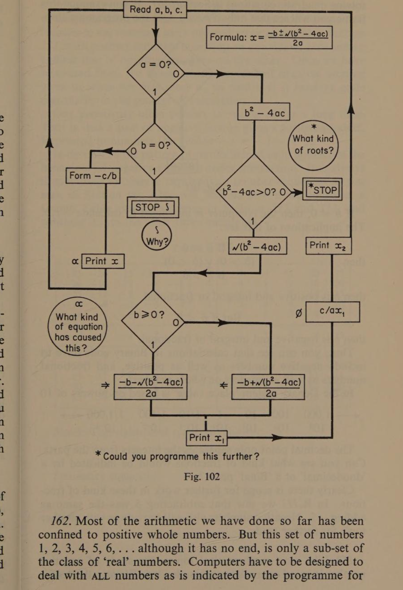
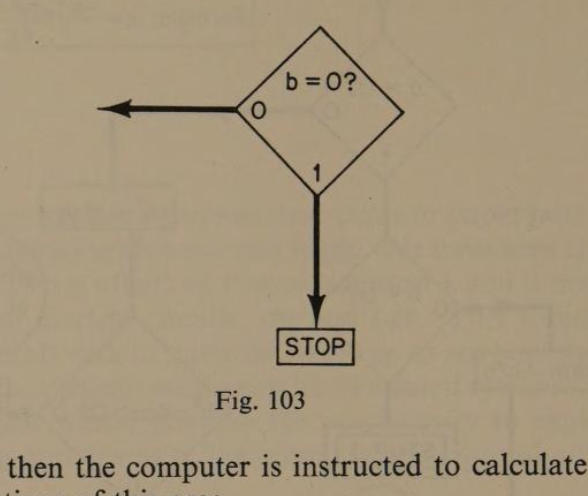
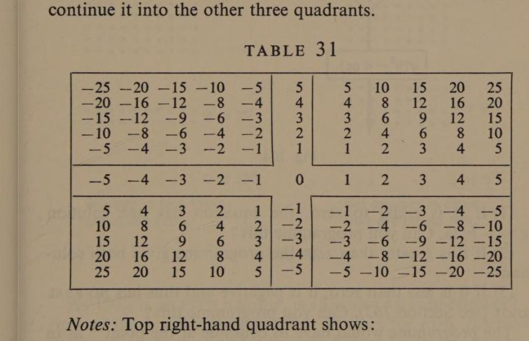
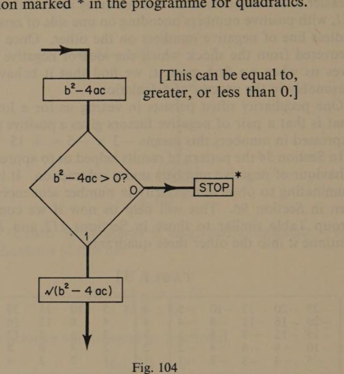
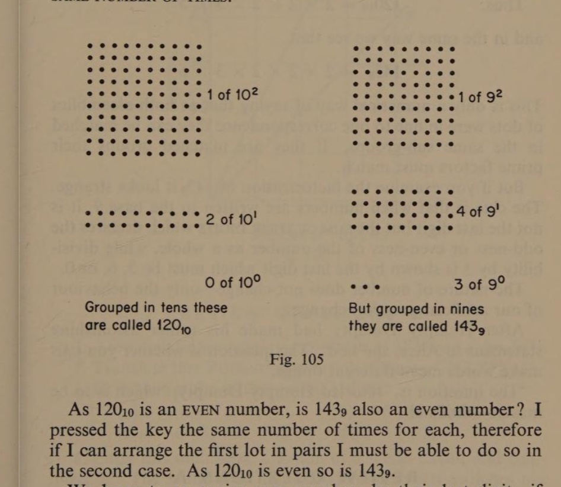

Conclusion
A Note to Younger Readers
page 179150. In this book I have asked you over 1,000 questions. During discussions your teacher or your parents will have asked many more. I hope that you, too, have had a lot of questions to ask because the main purpose of the book is to arouse interest and to provoke discussion.
151. You may have been surprised to find there were so few ‘sums’ and problems of the kind usually included in school text-books, and in consequence you may think you can’t have learned very much from it. In the sense of ‘doing sums’ I didn’t intend that you should. What I did hope was that I might introduce you to a few important mathematical ideas and encourage you to think about them.
152. Now you are at the end of the book I want to congratulate you on getting so far. Well done! You should be grateful to your teacher for helping you through the difficult bits. If you feel it has been a valuable study I should be glad to hear from you, although most of the credit is due to your teacher for filling in the many gaps I have left.
153. To give you some idea of what you have learned, I have prepared some questions on all the topics we have discussed. You should attempt them without consulting the appropriate parts of the book but before doing so it would be a good idea to look through the Table of Contents and revise the topics you found most difficult.
154. In a second book I hope to develop the topics we have begun in this one. Our introduction to Propositional Algebra will be extended so as to include more complex relationships than conditions which are effective only jointly [∧], or effective only singly [⊻], or effective either jointly or singly [∨], by considering situations in which a number of different relationships are combined, or in which one condition implies or excludes another. We will investigate further the notion of a ‘set’, and use it to illuminate other aspects of Mathematics.
155. page 180 Wherever possible we will use familiar models to illustrate the extension of these ideas. In Chapter Five we saw that a graph line defined a ‘set’ of points, each of which was determined by a given relationship. In this example we graph the cost of apples in relation to their weight when the price is 1s. 6d. (1½ shillings) per pound. The set of ‘points’ above the graph line is the cost/weight relation of more expensive apples. Similarly, the cost/weight relationships of cheaper apples all lie below the graph line.

1½W) and the darker area below (C < 1½W).">By expressing these relationships algebraically we can summarise them as follows:
The graph line indicates the relation C = 1½ W
The light area indicates the relation C > 1½ W
The darker area indicates the relation C < 1½ W
We could then go on to ask whether all relationships give ‘straight line’ graphs, and if not, which kind don’t?
156. We have already started the study of ‘sets’ with our references to ‘sets of points’, ‘sets of numbers’, ‘set of quadrilaterals’, etc., but we could use even more familiar and everyday examples such as classifying the pupils of a school by their personal characteristics. By definition the Universal Set is the population of the school and the sub-sets we choose couldpage 181 be ‘fair-haired’, ‘blue-eyed’, and ‘members of Class IV’. Venn diagrams can be used to illustrate the relationships.
Let A represent ‘fair-haired’.
And B represent ‘blue-eyed’.
And C represent ‘in Class IV’.

The numbered areas will correspond to various combinations of these characteristics. For example, a blue-eyed pupil not in Class IV who had dark hair would be in the category indicated by the area [6] which contains the ‘set’ of such pupils. This sub-set could be defined as A′ ∧ B ∧ C′ and establishes a connection between the Algebra of Sets and the Algebra of Sentences. Once again we see how mathematical topics are linked together as the study of relationships.
157. In Section 96 we saw from Pascal’s Triangle of Numbers that these eight areas can be combined in 256 ways and we deduced from this that 3 conditions, A, B, C can have 256 unique relationships and be expressed in the same number of different algebraic statements. I would like to identify them with you and this would lead us into a topic called ‘Combinations and Permutations’ which among other things is the Arithmetic of Football Pools.
158. 8 = 2³, and eight 3-hole punched cards make a deck of which the Binary numbers from 0 to 7 can be represented. At the end of the last chapter there were one or two examples of how such a deck could be used to solve simple problems of classification. The number 256 = 2⁸, and with eight-hole cards we could represent Binary numbers from 0 to 255. This could be used for solving more difficult problems.
159. page 182 Binary numbers and punched cards or paper tape are the basis of computer arithmetic and logic. We have seen this is so because the two symbols of Binary notation 1 and 0 match the two states of electric circuits, on and off. This topic would have to be dealt with in more detail for us to see how the paper and pencil calculations we do can be translated into circuits and switches. This would give me the opportunity to explain the construction and use of a ‘logic box’ which I promised you in Section 27.
160. Because, strictly speaking, a computer can perform only basic arithmetic, all mathematical problems have to be analysed numerically before being presented to the machine. This is part of the process called ‘programming’. In Section 102 we were shown how a programme must include every essential step and how it must also provide for alternative sequences of operations. The programmes were not real because they were not expressed numerically. I would like to develop this topic by giving you examples of problems in elementary mathematics to analyse and write programmes for. Such exercises would be valuable in helping you to see how and why the methods you are taught solve the problems. Can you solve a quadratic equation by using the formula? If you can perhaps you would like to compare the programme method on the next page. If you can’t, it doesn’t matter, as we will deal with it fully in the next book.
161. You may anticipate this by examining the points of special interest I have marked on the flow diagram (Fig. 102), and answering the questions I have asked at three of them. After you have read up to Section 164 you will realise the programme is incomplete and in that section you are challenged to extend it so as to include the two possible cases not provided for.

0?, with STOP points and 'What kind of roots?' queries, marked at three points 'Could you programme this further?'">162. page 183 Most of the arithmetic we have done so far has been confined to positive whole numbers. But this set of numbers 1, 2, 3, 4, 5, 6, … although it has no end, is only a sub-set of the class of ‘real’ numbers. Computers have to be designed to deal with all numbers as is indicated by the programme forpage 184 solving quadratic equations in Section 161. If you examine this frame you will see that only if b = 0 does the programme stop.

If b ≠ 0, then the computer is instructed to calculate −c/b. The implications of this are:
If b ≠ 0
then (b > 0) ∨ (b < 0)
If b > 0 then b is positive and integral or fractional.
But if b < 0 then b is negative and integral or fractional.
Thus, you can see that calculations in Binary code have to include negative numbers as well as positive, and fractional numbers as well as integers or whole numbers. In the Denary system ‘place value’ is based on powers of 10:
| ← 1,000 | 100 | 10 | 1 | · | 1/10 | 1/100 | 1/1,000 → |
| 10³ | 10² | 10¹ | 10⁰ | · | 10⁻¹ | 10⁻² | 10⁻³ |
The decimal point only separates the integers from the parts. Can you see what kind of fractions would be indicated by a ‘duodecimal’ or a ‘Binal’ point? Clearly there is scope for further work in these kind of fractions. In R.111 we saw that subtracting 5 was the same as adding −5. Negative numbers also will provide us with another topic for further study.
163. Like most mathematical topics, the study of negative number is based on a relatively simple idea. We may think of itpage 185 in connection with debit or credit bank-balance; or in respect of temperatures above or below freezing point; or we may find it easier to see numbers in an ordered array as we did in Section 111, with positive numbers unending on one side of zero and an endless line of negative numbers on the other. Once we have recovered from the shock which the idea of negative number gives us when we first meet it, we find that it behaves quite reasonably in the process of calculation.
One peculiarity often persists in vexing us for a long time. That is that a pair of negative factors gives a positive product. Expressed in numbers this means −3 × −5 = +15. In Section 34 the pattern of results helped us to appreciate the behaviour of square roots under subtraction. It is always illuminating to observe regularity in number sequences as was seen in Section 96. This will help us now if we construct a Group Table similar to those in Sections 112 and 113, and continue it into the other three quadrants.

Notes: Top right-hand quadrant shows: 4 × −4 = −16. Symmetry suggests: −4 × −4 = +16. Also: −4 × +4 = −16 and +4 × −4 = −16. Further, √16 = ± 4 and −16 has no real root.
164. page 186 The observation that a negative number has no real square root, takes us back to Section 161 to reconsider the stop instruction marked * in the programme for quadratics.

0? leading to STOP or to √(b²−4ac).">(1) If it is equal to zero, the equation has one solution x = −b/2a. Can you programme this?
(2) If it is greater than zero the programme gives both solutions.
(3) If it is less than zero, it is negative and thus has no real root (see Section 163). Can you programme this?
The programme would have to continue at the point * as in practice solutions to quadratic equations having such roots are often required, and a special number was invented to provide them. It is called i and represents the imaginary number √−1. It is essential in electrical theory where it is known as the j-operator because the symbol i is used for another purpose. Thus, you see that numbers are quite artificial and we can even invent ‘imaginary’ numbers to suit our needs.
‘Humpty Dumpty said to Alice: “When I use a word, it means just what I choose it to mean—neither more nor less.”’
Lewis Carroll, who wrote Alice through the Looking Glasspage 187 was a mathematician, and what he made Humpty Dumpty say about words can just as truly be said about numbers.
165. I have tried to point out that when we recognise separate objects either singly or in groups, and when we can see a relationship between them of being equal to, greater than or less than, or proportional to each other, we are discerning the reality which Mathematics interprets. But the symbols we use are quite artificial. In both diagrams below I have pressed the typewriter key the same number of times.

Grouped in tens these are called 120₁₀. But grouped in nines they are called 143₉. As 120₁₀ is an even number, is 143₉ also an even number? I pressed the key the same number of times for each, therefore if I can arrange the first lot in pairs I must be able to do so in the second case. As 120₁₀ is even so is 143₉.
We learn to recognise even numbers by their last digit—if it is even the whole number is even. But 143₉ has 3 for its last digit. Clearly then, the method we use to discriminate between odd and even numbers in Denary is of no use when numbers are written to the base nine. Let us investigate the matter by breaking down each number into its prime factors. We must remember when dealing with 143₉ that our calculations must be done in base 9 tables.
166. page 188 The prime factors of a number can be found by dividing it by each prime number in turn as often as is possible without remainder.
| 2)120 | divisible by 2 … 2 |
| 2)60 | divisible by 2 … 2 |
| 2)30 | divisible by 2 … 2 |
| 3)15 | divisible by 3 … 3 |
| 5)5 | divisible by 5 … 5 |
| 143 | … so is this |
| 66 | … so is this |
| 33 | … so is this |
| 16 | … so is this |
| 5 | … so is this |
Thus, 120₁₀ = 2 × 2 × 2 × 3 × 5
and in the same way 143₉ = 2 × 2 × 2 × 3 × 5
This is only a numerical way of saying that as both assemblies of dots were in one to one correspondence they can be matched in the same sub-groups. If they are matched groups their prime factors must match. But if you examine the factorization of 143₉ it looks strange. The clue is that when numbers are written to the base 9, it is not the last digit but the sum of the digits which declares the odd-ness or even-ness of the number as a whole, while divisibility by 3 is shown by the last digit which must be 3, 6, or 0. The nature of number does not change—only the behaviour of our artificial notation changes.
After Humpty Dumpty had made his rather embarrassing statement to Alice, she said: ‘The question is whether you can make words mean different things.’ ‘The question is,’ retorted Humpty Dumpty, ‘which is to be master—that’s all.’